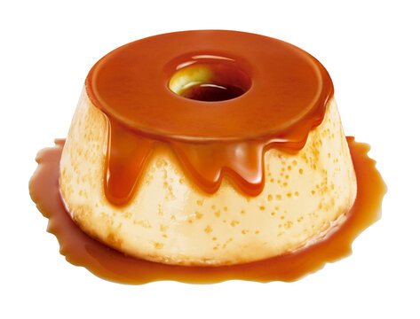

Descrição
Aprenda a fazer o doce mais fácil e amado de todos!
São apenas 3 Ingredientes, não vai vacilar hein!
Ingredientes:
- 1 lata de leite condensado
- 2 medidas de leite da lata de leite condensado
- 3 ovos inteiros
Modo de preparo:
- Caramelize uma forma de pudim e reserve ao lado.
- Bata bem todos os ingredientes no liquidificador.
- Leve ao forno médio pré-aquecido em banho maria por aproximadamente 40 minutos.